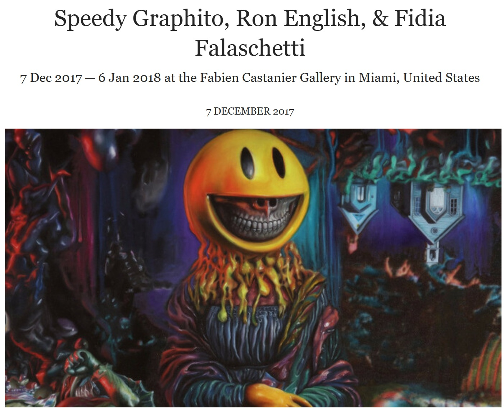

Exhibitions
TOYBOX: America in the Visuals, Corey Helford Gallery, Los Angeles, California, US, December 2–30, 2017.
POPADELIC, Fabien Castanier Gallery, Miami, Florida, US, December 7, 2017–January 6, 2018.
TOYBOX: America in the Visuals, Corey Helford Gallery, Los Angeles, California, US, December 2–30, 2017.
POPADELIC, Fabien Castanier Gallery, Miami, Florida, US, December 7, 2017–January 6, 2018.
Notes
The work references Leonardo da Vinci’s Mona Lisa.
The work references Leonardo da Vinci’s Mona Lisa.
Ancillary Documentation
The following materials document the POPADELIC exhibition appearance and the Leonardo da Vinci reference associated with the work.


